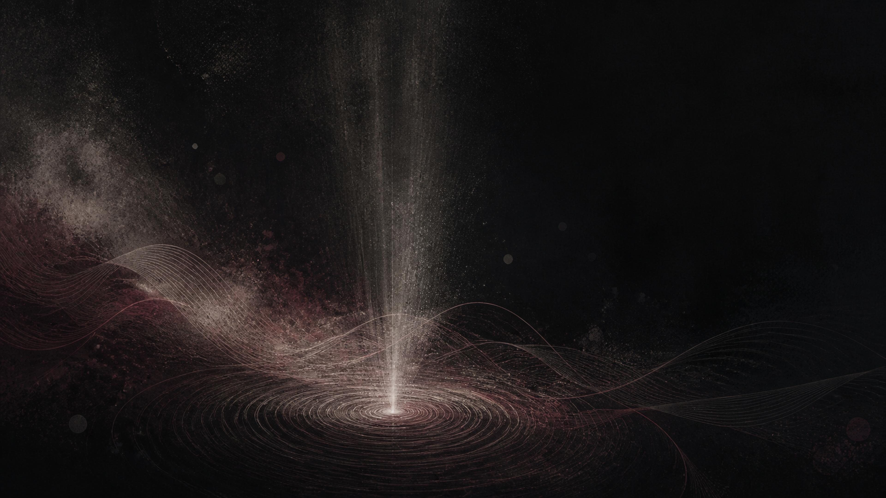

Humanities, arts, and philosophy, read closely.
Panorama Scholarly Group's imprint for philosophy, comparative religion, the arts, music, and dance. Six journals for scholarship that takes its time.
Browse the journals- Journals
- 6
- Scope
- Phil., Arts, Music
- Access model
- Open Access
- Registered ISSN
- 4 of 6

About Threnody.
Threnody carries the humanities: philosophy, comparative religion, the arts, music, and dance. Its six journals move at the pace serious interpretive work actually takes, rather than the pace a rolling-deadline system might prefer for laboratory science.
The name comes from a lament, a piece of music written to be sat with. That's the register the imprint aims for: scholarship on subjects that reward close, unhurried reading.
Six journals across philosophy, religion, and the arts.
From comparative philosophy and Three Teachings studies to global music and dance scholarship, each journal keeps its own scope and editorial board under the Threnody name.
All six journals are open for submissions.
Threnody journals use continuous, rolling submission, with no fixed issue deadlines.